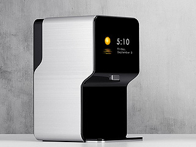
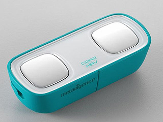
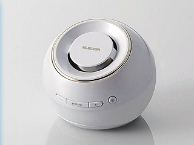

WELCOME TO NEWMAN
纽曼公司创立于1996年，现有员工2000余人，是一家集研发、制造、销售、服务为一体的中国高新技术企业。公司研发及生产体系健全，拥有湖南、北京和深圳三大 中心。经过17年的发展，凭借强大的研发力量及资源整合能力，纽曼已拥有目前中国数码行业较为完整产品体系。产品跨越专业及消费数码产品领域。

CULTURAL
企业文化
优秀的企业文化能给企业注入蓬勃的活力， 是企业的灵魂。纽曼十分注重自身企业文 化建设，将企业文化的精随传递给每一位 员工。

HONOUR
企业荣誉
纽曼历年来坚持不懈地努力，以品质求生 存，以创新谋发展，从而打造出众多经典 产品，得到了用户以及行业媒体的普遍肯 定与褒奖。
QUALIFICATION
资格认证
纽曼长期以来将科学化管理放在首位，并 将产品质里视为企业命脉，经过长期不懈 的系统化学习和实践，逐步通过了IS09001 质里管理体系认证。
RESEARCH
研究开发
纽曼一直以来把产品技术研发创新作为产 品的核心竞争力，组建了一支专业的、国 际化的研发团队，拥有专业研发技术人员 近300名。
PRODUCTION CENTER
纽曼经过十余年的发展，已经成为中国家电行业著名品牌之一，纽曼品牌：mVAD平板电脑、纽曼车PAD、纽曼饮水机、纽曼冰箱、洗衣机等连续数年国内市场占 有率前列，纽曼品牌IT产品的市场占有率在国内都名列逐年上升。






NEWS CENTER
纽曼品牌数年来培育了数千万忠实用户，特别是得到了中国广大年轻用户的喜爱和认可，纽曼公司拥有一大批经 验丰富的市场和品牌推广团队，每年拥有数千万 的市场和品牌推广资金。
AWE2016开幕，企业巨头竞相争艳，大咖云集
2016年3月9日9：30，由中国家电协会主办的中国家电及消费电子博览会一上海2016在上海新国际博览中心隆重开幕。在这个全球瞩目、亚太区最大规模的家电展会上
VIDEO CENTER
纽曼现已成为目前中国家电行业最知名的品牌之一，先后获得包括中央电视台、《财经时报》、新浪网、网易、品牌中国等国内几十家专业媒体及权威评奖机构 所评出的近百个大奖。